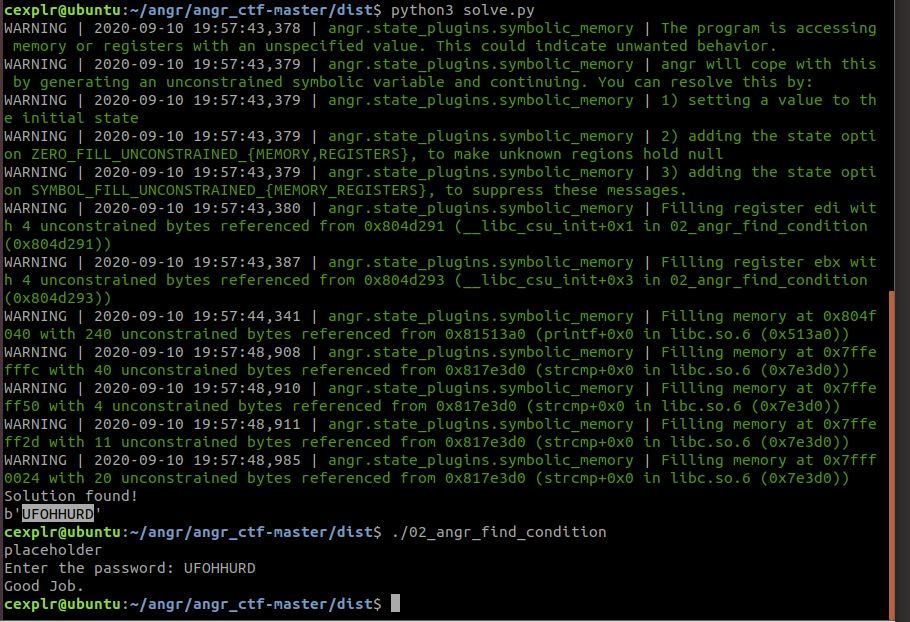
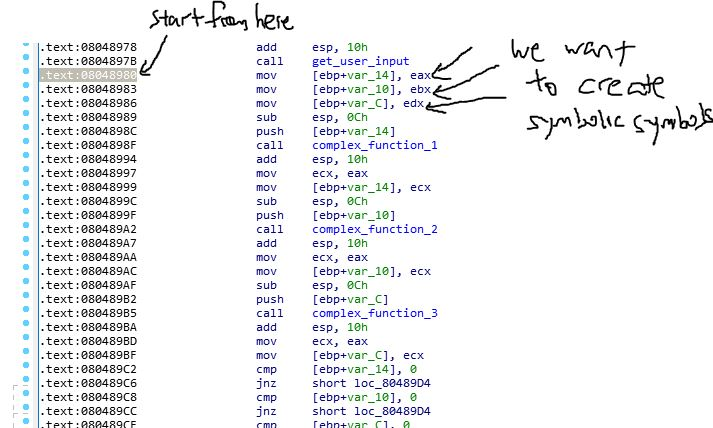
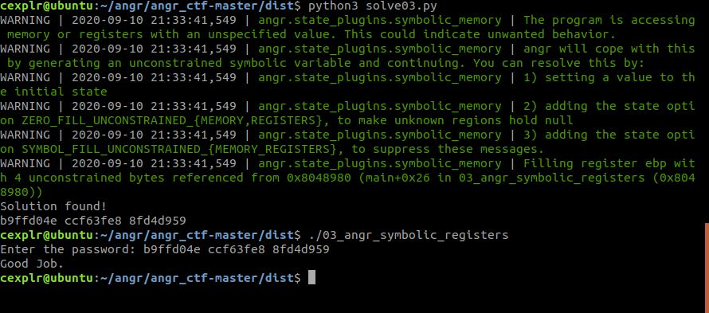
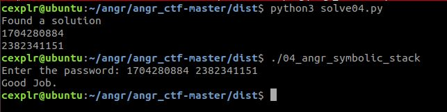

Angr-CTF #2 [02_angr_find_condition -> 03_angr_symbolic_register -> 04_angr_symbolic_stack]
Description
Welcome to part 2 of Angr-CTF post. This will be on a discussion on the next three challenges: 02_angr_find_condition where we will learn to detect good or bad paths based on output strings, 03_angr_symbolic_registers where we will "mark" registers and lastly 04_angr_symbolic_stack where we will set up the stack in a blank state and exploring after the setup.
02_angr_find_condition
This exercise is to show us another usage of the find and avoid function.
The "find" and "avoid" parameters may be any of:
- An address to find
- A set or list of addresses to find
- A function that takes a state and returns whether or not it matches
For this exercise, it will explore the use of those functions with afunction that takes a state and returns whether or not it matches.
This binary is still very similar and the only difference we will do for this exercise is to match a find when the stdout prints Good Job and a match to avoid when the stdout prints Try again.. Keep in mind that stdout is in bytes.
How this work is that time a state changes during an exploration, it would check the std output to check for that string. If none of the string matches, continue on.
We can come up with those two functions.
import angr
import sys
def success(curr_state):
# Get the value of the stdout at the current state
stdout_str = curr_state.posix.dumps(sys.stdout.fileno())
return b"Good Job" in stdout_str # Will return whether or not it matches
def fail(curr_state):
# Get the value of the stdout at the current state
stdout_str = curr_state.posix.dumps(sys.stdout.fileno())
return b"Try again" in stdout_str # Will return whether or not it matches
The next few steps should now be highly familiar to you at this moment so we shall just head straight into the full script and just adding those two functions as find and avoid
Full Script
import angr
import sys
def success(curr_state):
# Get the value of the stdout at the current state
stdout_str = curr_state.posix.dumps(sys.stdout.fileno())
return b"Good Job" in stdout_str # Will return whether or not it matches
def fail(curr_state):
# Get the value of the stdout at the current state
stdout_str = curr_state.posix.dumps(sys.stdout.fileno())
return b"Try again" in stdout_str # Will return whether or not it matches
# Set up a project and load the binary
project = angr.Project("./02_angr_find_condition")
# Construct an entry state to be run from main
state = project.factory.entry_state()
# Construct a simulation manager with the initial state
simmgr = project.factory.simulation_manager(state)
# start exploring based on the function that accepts a state and returns whether or not it matches.
simmgr.explore(find=success,avoid=fail)
if simmgr.found[0]:
print("Solution found!")
print(simmgr.found[0].posix.dumps(sys.stdin.fileno()))
else:
print("No solution found")
# UFOHHURD

03_angr_symbolic_registers
For this challenge, it is a little more interesting. It will give us a taste of creating and initializing some components of a blank_state and three of its regsiters starting from a non-main function address.
Let's dive straight down into the decompilation.
int __cdecl main(int argc, const char **argv, const char **envp)
{
int v3; // ebx
int v4; // eax
int v5; // edx
int v6; // ST1C_4
unsigned int v7; // ST14_4
unsigned int v9; // [esp+8h] [ebp-10h]
unsigned int v10; // [esp+Ch] [ebp-Ch]
printf("Enter the password: ");
v4 = get_user_input();
v6 = v5;
v7 = complex_function_1(v4);
v9 = complex_function_2(v3);
v10 = complex_function_3(v6);
if ( v7 || v9 || v10 )
puts("Try again.");
else
puts("Good Job.");
return 0;
}
The main function seems a little weird. Firstly, we get some form of user input which there wil be three variables being put into different complex functions. What is strange is that there seem to be no references to this local variables which makes it an uninitialized variable. Later on, the result of the complex functions are then compared to make sure that they are 0 else it will fail.
Click here to see the decompilations of all three complex functions
unsigned int __cdecl complex_function_1(int a1)
{
return (((((((((((((((((((((a1 + 17062705) ^ 0xB168C552) + 647103529) ^ 0x9F14CFD7) - 548738866) ^ 0xF78063EF)
- 1352480098) ^ 0x5D1F4C6)
- 57802472) ^ 0xB6F70BF8)
- 1347645151
+ 648671421) ^ 0x3D5082FE)
- 9365053) ^ 0xD0150EAD)
+ 1067946459) ^ 0xE6E03877)
- 359192087
+ 961945065) ^ 0xE1EECD69)
- 1817072919) ^ 0x6B86ECF5)
- 449212884) ^ 0x2012CCDB;
}
unsigned int __cdecl complex_function_2(int a1)
{
return (((((((((((((((((((((((((a1 + 488799652) ^ 0x5E3307AF) - 177708255) ^ 0xF4CE17EB) - 201900821) ^ 0x5258EFD1)
- 1211402798) ^ 0x25DB9B81)
- 1561143269
+ 429947764) ^ 0xC8788683)
+ 38428841) ^ 0x54FC78E8)
- 1037482775) ^ 0x42C3BC1E)
- 1210432369) ^ 0x72753AEA)
+ 627549795) ^ 0xD03DF7C8)
- 105848572
+ 1068891943) ^ 0x9DF87491)
+ 514536287) ^ 0xE411081C)
- 1559650067) ^ 0xCD5950F1)
- 1664779985) ^ 0xC7340566;
}
unsigned int __cdecl complex_function_3(int a1)
{
return ((((((((((((((((((a1 ^ 0xA6990438) - 1507377574 + 492465943) ^ 0x4C129858) - 1488446618) ^ 0x7D335ACB)
- 888160389) ^ 0xE856BBFB)
- 1014728623) ^ 0x30BC8744)
- 315821521) ^ 0x97DEA993)
+ 1606484862) ^ 0x3FCFCEE1)
+ 240258290) ^ 0x97BB1E9F)
- 769192860) ^ 0x571665D0)
- 1220358966
+ 845065664) ^ 0xE61DCE92;
}
Let us take a look at the user input to figure out what is going on.
int get_user_input()
{
int v1; // [esp+0h] [ebp-18h]
int v2; // [esp+4h] [ebp-14h]
int v3; // [esp+8h] [ebp-10h]
unsigned int v4; // [esp+Ch] [ebp-Ch]
v4 = __readgsdword(0x14u);
__isoc99_scanf("%x %x %x", &v1, &v2, &v3);
return v1;
}
It seems like we are geting in three user inputs in hexadecimal form and storing into get_user_input's local variables and returning just the first value, v1. Which does not make too much sense. However, this will get clarified when we dive into the disassembly.
; int __cdecl main(int argc, const char **argv, const char **envp)
public main
main proc near
var_14= dword ptr -14h
var_10= dword ptr -10h
var_C= dword ptr -0Ch
var_4= dword ptr -4
argc= dword ptr 8
argv= dword ptr 0Ch
envp= dword ptr 10h
lea ecx, [esp+4]
and esp, 0FFFFFFF0h
push dword ptr [ecx-4]
push ebp
mov ebp, esp
push ecx
sub esp, 14h
sub esp, 0Ch
push offset aEnterThePasswo ; "Enter the password: "
call _printf
add esp, 10h
call get_user_input
mov [ebp+var_14], eax # This is the first value
mov [ebp+var_10], ebx
mov [ebp+var_C], edx
sub esp, 0Ch
push [ebp+var_14] <------- EAX
call complex_function_1
add esp, 10h
mov ecx, eax
mov [ebp+var_14], ecx
sub esp, 0Ch
push [ebp+var_10] <------- EBX
call complex_function_2
add esp, 10h
mov ecx, eax
mov [ebp+var_10], ecx
sub esp, 0Ch
push [ebp+var_C] <------- EDX
call complex_function_3
add esp, 10h
mov ecx, eax
...
...
We can see that the values pushed are marked with <------- and its registers. The corresponding registers are determined by finding where did [ebx+var_???] gets written in the disassembly.
mov [ebp+var_14], eax # This is the first value
mov [ebp+var_10], ebx
mov [ebp+var_C], edx
After that if we were to look into the disassembly of get_user_input function.
push ebp
mov ebp, esp
sub esp, 18h
mov ecx, large gs:14h
mov [ebp+var_C], ecx
xor ecx, ecx
lea ecx, [ebp+var_10] #The third address for scanf
push ecx
lea ecx, [ebp+var_14] # The second address of scanf
push ecx
lea ecx, [ebp+var_18] # The first address of scanf
push ecx
push offset aXXX ; "%x %x %x"
call ___isoc99_scanf
add esp, 10h
mov ecx, [ebp+var_18] # first adderss of scanf
mov eax, ecx <------- eax value = first address of scanf
mov ecx, [ebp+var_14] # second address of scanf
mov ebx, ecx <------- ebx value = second address of scanf
mov ecx, [ebp+var_10] # third address of scanf
mov edx, ecx <------- edx value = third address of scanf
From this disassembly, values of registers eax,ebx and edx are being determined by scanf in the get_user_input function.
As a recap, remember that we can "mark" registers and those registers are stored in SimStates.
For example:
In [4]: state = p.factory.entry_state()
In [5]: state.regs.rax
In [6]: state.regs.eax
Out[6]: <BV32 0x1c>
Bitvectors
Before attempting the challenge, we should understanding the basics of bitvectors.
According to https://docs.angr.io/core-concepts/solver#working-with-bitvectors,
A bitvector is just a sequence of bits, interpreted with the semantics of a bounded integer for arithmetic.
With this, we can now create symbolic variables which we want to "mark". for instance,
In [10]: symbolName = state.solver.BVS("symbolName",32)
# We can also do mathematical equations with them
In [11]: symbolName + 2
Out[11]: <BV32 symbolName_5_32 + 0x2>
In [12]: symbolName /4 + symbolName
Out[12]: <BV32 symbolName_5_32 / 0x4 + symbolName_5_32>
However we should note that bitvector can only do math with those of the same bit length
In [14]: ninebit = state.solver.BVS("ninebit",9)
In [15]: ninebit + symbolName
---------------------------------------------------------------------------
ClaripyOperationError Traceback (most recent call last)
<ipython-input-15-0d285337272a> in <module>()
----> 1 ninebit + symbolName
/home/cexplr/.local/lib/python3.6/site-packages/claripy/operations.py in _op(*args)
48 success, msg = extra_check(*fixed_args)
49 if not success:
---> 50 raise ClaripyOperationError(msg)
51
52 #pylint:disable=too-many-nested-blocks
ClaripyOperationError: args' length must all be equal
We can solve that by either using zero_extend function which extending with zeros with the number of bits that you want to extend or the sign_extend to duplicate the sign bits. The following example shows the usage of zero_extend function.
In [16]: ninebit.zero_extend?
Signature: ninebit.zero_extend(n)
Docstring:
Zero-extends the bitvector by n bits. So:
a = BVV(0b1111, 4)
b = a.zero_extend(4)
b is BVV(0b00001111)
File: ~/.local/lib/python3.6/site-packages/claripy/ast/bv.py
Type: method
In [17]: ninebit.zero_extend(32-ninebit.length)
Out[17]: <BV32 0#23 .. ninebit_6_9>
In [18]: symbolName = symbolName + ninebit.zero_extend(32-ninebit.length)
In [19]: symbolName
Out[19]: <BV32 symbolName_5_32 + (0#23 .. ninebit_6_9)>
Apart from Bit Vector Symbols (BVS), we can also add Bit Vector Values(BVV). We can for example create a 32 bit number of the value 10.
In [20]: value10 = state.solver.BVV(10,32)
In [21]: value10
Out[21]: <BV32 0xa>
...
...
In [24]: value10 + 20
Out[24]: <BV32 0x1e>
Note that those values being returned are ASTs AKA Bitvectors.
Solution
Now that we know what bitvectors are, we can start to solve the challenge. For this challenge, the given scaffold hints us to use a blank_state. This state allows us to choose from which address we want to start from and set the register values once we construct the state. We establish the fact that the three passwords are needed and those registers containing the input would be send into their respective complex functions. Once the three of them passes the complex function, we would succeed otherwise we fail. The registers containing the first, second and third passwords are eax, ebx and edx respectively.
First we can create a blank state and to do that we can choose the address that we want to start with.
In [4]: blank_state = project.factory.blank_state?
Signature: project.factory.blank_state(**kwargs)
Docstring:
Returns a mostly-uninitialized state object. All parameters are optional.
:param addr: The address the state should start at instead of the entry point.
:param initial_prefix: If this is provided, all symbolic registers will hold symbolic values with names
prefixed by this string.
:param fs: A dictionary of file names with associated preset SimFile objects.
:param concrete_fs: bool describing whether the host filesystem should be consulted when opening files.
:param chroot: A path to use as a fake root directory, Behaves similarly to a real chroot. Used only
when concrete_fs is set to True.
:param kwargs: Any additional keyword args will be passed to the SimState constructor.
:return: The blank state.
:rtype: SimState
File: ~/.local/lib/python3.6/site-packages/angr/factory.py
Type: method
Here, since we know how the userinput would get its value (i.e. through the three registers), we can essentially skip the get_user_input function and just start from after the function returns. Finally, we also know that three registers should contain integers making it a 32 bit value. Once those are done, we can start to simulate the state and explore. If a solution is found, evaluate those BVS and convert them back to hexadecimal values.

import angr
import sys
project = angr.Project("./03_angr_symbolic_registers")
start_address = 0x8048980
state = project.factory.blank_state(addr=start_address)
# Three BVS that we want to mark
pass0 = state.solver.BVS("pass0",32)
pass1 = state.solver.BVS("pass1",32)
pass2 = state.solver.BVS("pass2",32)
# Set up the current state register at the start address thus "marking" them
state.regs.eax = pass0
state.regs.ebx = pass1
state.regs.edx = pass2
# Construct the simulation manager with the newly initialized state
simmgr = project.factory.simulation_manager(state)
# Explore with the same functions that are used since they are the same as the 02_angr_find_condition
def success(curr_state):
# Get the value of the stdout at the current state
stdout_str = curr_state.posix.dumps(sys.stdout.fileno())
return b"Good Job" in stdout_str # Will return whether or not it matches
def fail(curr_state):
# Get the value of the stdout at the current state
stdout_str = curr_state.posix.dumps(sys.stdout.fileno())
return b"Try again" in stdout_str # Will return whether or not it matche
# explore
simmgr.explore(find=success, avoid=fail)
found_state = ""
if simmgr.found[0]:
# Store the found state for easier evaluation of symbols
found_state = simmgr.found[0]
print("Solution found!")
# Evaluate all the values and note that those values are in integers
pass0 = found_state.solver.eval(pass0)
pass1 = found_state.solver.eval(pass1)
pass2 = found_state.solver.eval(pass2)
# Convert from integer to hexadecimal and print it out
print("%x %x %x",format(pass0,pass1,pass2))
else:
print("No found solution :(")
Running it and testing it we should get the result!

04_angr_symbolic_stack
For this challenge, the function that we are more interested in is the handle_user function
int __cdecl main(int argc, const char **argv, const char **envp)
{
printf("Enter the password: ");
handle_user();
return 0;
}
Here is the decompilation of the handle_user function.
int handle_user()
{
int result; // eax
int v1; // [esp+8h] [ebp-10h]
int v2; // [esp+Ch] [ebp-Ch]
__isoc99_scanf("%u %u", &v2, &v1);
v2 = complex_function0(v2);
v1 = complex_function1(v1);
if ( v2 == 0x773024D1 && v1 == 0xBC4311CF )
result = puts("Good Job.");
else
result = puts("Try again.");
return result;
}
Unlike the previous challenge, this time we can tell where the values are stored in right from the decompilation without looking at the disassembly. Those values are stored in the memory in the stack frame. This means that we can now attempt to create symbolic stack memory where the values would be passed into the complex functions. Like the previous, challenge, we can create a blank_state with a custom start address; start address can be after the scanf function call.
Which Start Address?
For this, we should take a look at the disassembler.
text:08048679 public handle_user
.text:08048679 handle_user proc near ; CODE XREF: main+21↓p
.text:08048679
.text:08048679 var_10 = dword ptr -10h
.text:08048679 var_C = dword ptr -0Ch
.text:08048679
.text:08048679 ; __unwind {
.text:08048679 push ebp
.text:0804867A mov ebp, esp
.text:0804867C sub esp, 18h
.text:0804867F sub esp, 4
.text:08048682 lea eax, [ebp+var_10]
.text:08048685 push eax
.text:08048686 lea eax, [ebp+var_C]
.text:08048689 push eax
.text:0804868A push offset aUU ; "%u %u"
.text:0804868F call ___isoc99_scanf
.text:08048694 add esp, 10h <-----this clears the variable for the two inputs as part of housekeeping since scanf is not completed
.text:08048697 mov eax, [ebp+var_C]
.text:0804869A sub esp, 0Ch
.text:0804869D push eax
.text:0804869E call complex_function0
.text:080486A3 add esp, 10h
.text:080486A6 mov [ebp+var_C], eax
.text:080486A9 mov eax, [ebp+var_10]
...
...
Since this is following the cdecl calling convention
According to wikipedia,
The cdecl (which stands for C declaration) is a calling convention that originates from Microsoft's compiler for the C programming language and is used by many C compilers for the x86 architecture.[1] In cdecl, subroutine arguments are passed on the stack. Integer values and memory addresses are returned in the EAX register, floating point values in the ST0 x87 register. Registers EAX, ECX, and EDX are caller-saved, and the rest are callee-saved.
Since the caller would do the clean up which is what is happening at 0x08048694, we will want to create a blank state from the address after this, 0x08048697 instead.
state = project.factory.blank_state(addr=0x08048697)
Stack operations
There are three important stack function. They are stack_pop,stack_push and stack_read.
The following is the dump from the documentation.
In [24]: state.stack_push?
Signature: state.stack_push(thing)
Docstring: Push 'thing' to the stack, writing the thing to memory and adjusting the stack pointer.
File: ~/.local/lib/python3.6/site-packages/angr/sim_state.py
Type: method
In [25]: state.stack_pop?
Signature: state.stack_pop()
Docstring: Pops from the stack and returns the popped thing. The length will be the architecture word size.
File: ~/.local/lib/python3.6/site-packages/angr/sim_state.py
Type: method
In [27]: state.stack_read?
Signature: state.stack_read(offset, length, bp=False)
Docstring:
Reads length bytes, at an offset into the stack.
:param offset: The offset from the stack pointer.
:param length: The number of bytes to read.
:param bp: If True, offset from the BP instead of the SP. Default: False.
File: ~/.local/lib/python3.6/site-packages/angr/sim_state.py
Type: method
Setting up the blank state
For this challenge, we will need to create a symbolic stack for the password inputs specifically for the following. However, there is a catch. Since we want to make a symbolic stack and that we are jumping into the middle of the function, we need to account and make sure that the stack setup is correct or else values in registers and memory might be initialized wrongly giving false result. The following is taken from the disassembly.
int v1; // [esp+8h] [ebp-10h]
int v2; // [esp+Ch] [ebp-Ch]
We know that the two user inputs are unsigned integers and that they take up 4 bytes in the stack memory.
For this, start off by also simulating the formulation of the stack frame
state.regs.ebp = state.regs.esp
Next, make the esp point to the proper location (via subtraction) Since v2 starts at offset ebp-0xc, we can do that by subtracting the esp which contains the same value as ebp at the moment. Remember to subtract the length of 4 bytes since int contains 4 bytes.
state.regs.esp -= (0xc-4)
Finally, pushing 2 bitvectors with state.stack_push function onto the stack. Pushing the bitvector on the stack would change the value of the esp naturally.
pass0 = state.solver.BVS("pass0",32)
pass1 = state.solver.BVS("pass1",32)
state.stack_push(pass0)
state.stack_push(pass1)
Once, we are done, we have completed the initialization of the state's stack. With this in mind, we can start to create a script to do these.
The Script
import angr
import sys
# Create a new project
project = angr.Project("./04_angr_symbolic_stack")
# Construct the state after the clean up of the scanf function
state = project.factory.blank_state(addr=0x08048697)
# Set the state's stack to model after the completion of the scanf function
state.regs.ebp = state.regs.esp # The start of the new stack frame
state.regs.esp -= (0xc-4) # Adding the padding till the location of the first password location
# Create the bitvectors for the password the size of an integer
pass0 = state.solver.BVS("pass0",32)
pass1 = state.solver.BVS("pass1",32)
# push the two bitvector like it would be in the actual program
state.stack_push(pass0)
state.stack_push(pass1)
# Construct the simulation manager with the current state
simmgr = project.factory.simulation_manager(state)
def success(curr_state):
# Get the value of the stdout at the current state
stdout_str = curr_state.posix.dumps(sys.stdout.fileno())
return b"Good Job" in stdout_str # Will return whether or not it matches
def fail(curr_state):
# Get the value of the stdout at the current state
stdout_str = curr_state.posix.dumps(sys.stdout.fileno())
return b"Try again" in stdout_str # Will return whether or not it matche
# Explore for a result
simmgr.explore(find=success, avoid=fail)
if simmgr.found[0]:
print("Found a solution")
foundstate = simmgr.found[0]
print(foundstate.solver.eval(pass0))
print(foundstate.solver.eval(pass1))
else:
print("Cannot find solution")
